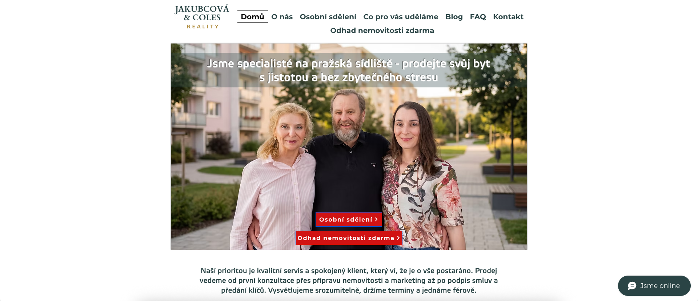

SEO Audit
Jakubcová Coles Reality – jakubcovacoles.cz
Intro
Web jakubcovacoles.cz technicky a částečně i obsahově funguje, ale má několik problémů, které jeho vyhledatelnost a kvalitu snižují. Jde o duplicitní a stará URL z vývoje webu, generické tagy, obsahově slabou homepage, a absenci strukturovaných data pro lokální realitní entitu.
1. Základní technické problémy
1.1 Duplicitní a legacy URL ředí autoritu
Web nese stopy několika fází vývoje a v navigaci i interním linkování zůstaly staré URLs, které se obsahově překrývají s novějšími stránkami:
| URL | Stav | Cílové řešení |
|---|---|---|
/about-5 („Osobní sdělení") |
Samostatná stránka v navigaci, obsahově se překrývá s O nás | Konsolidovat do /onas a stránku skrýt na Google Search Console |
/about-1 |
Mix „O nás", osobního sdělení a týmové sekce | Konsolidovat do /onas a skrýt na Google Search Console |
/webinar-registration |
Starý slug, který teď přesměrovává na /specialistenasidliste |
V interních odkazech nahradit finální URL |
V blogovém článku o prodeji bytu na sídlišti vede interní odkaz přes /webinar-registration a odkazuje na /about-1. Tato struktura mate crawlery i uživatele, tříští signály mezi duplicitními stránkami a zbytečně rozmělňuje relevanci.
Řešení: rozhodnout, která URL je kanonická pro „O nás" a která pro „Co pro vás uděláme / Specialisté na sídliště". Staré stránky přesměrovat na skutečné cíle a skrýt v Google Search Console, odstranit z navigace a v blogu přepsat interní odkazy tak, aby vedly na správnou stránku.
1.2 Explicitní AI obrázky
Na homepage a dalších klíčových stránkách jsou použité obrázky s názvy souborů typu Gemini_Generated... a ChatGPT Image.... Pro vyhledavače je to signál AI generovaného obsahu (= snížení autority a tím vyhledatelnosti); podlamuje to narativ copy webu, která klade důraz na autenticitu a osobní přístup. Některé obrázky jsou ostatentativně AI-generated (sekce Jsme rodina na stránce O nás), kde kontast s textem napravo je opravdu výrazný. Stejní lidé na různých imgs vypadají úplně jinak, což trochu působí, že jsou všichni smyšlení.
Řešení: v první řadě přejmenovat soubory, poté nahradit vizuály reálnými fotkami týmu, kanceláře, bytů...
2. SERP Metadata
Title tagy hlavních stránek jsou generické a nezachycují klíčová slova pro zvýšení vyhledatelnosti:
| Stránka | Současný title | Lepší title |
|---|---|---|
| Homepage | Jakubcová Coles Reality | Byty na sídlišti | Praha | Specialisté na pražská sídliště | Jakubcová Coles Reality |
| O nás | O nás | Jakubcová Coles Reality | Rodinná realitka v Praze od 1992 | Jakubcová Coles Reality |
| FAQ | FAQ | Jakubcová Coles Reality | FAQ – prodej bytu na sídlišti | Jakubcová Coles Reality |
| Kontakt | Kontakt | Jakubcová Coles Reality | Kontakt – Praha 3, Korunní | Jakubcová Coles Reality |
| Co pro vás uděláme | Co pro vás uděláme – Jakubcová Coles Reality | Prodej bytu krok za krokem | Jakubcová Coles Reality |
Crawlery titles přikládají velkou váhu. Proto v nich chcete zachytit nejrelevantnější klíčová slova a využít jejich maximání délky před zkrácením na SERPu. Současné verze stránky příliš nerozlišují, a neposkytují příliš kontextu.
Meta popisky
Na hlavních stránkách jsou meta popisky buď zcela prázdné, nebo Google bere úryvky z náhodných bloků – z patičky, z formuláře, z widgetu „Nejnovější příspěvky" nebo komentářové sekce pod článkem. Klíčové řešit u homepage a pilířových obsahových stránek.
Řešení: ručně vyplnit meta descriptions pro všechny klíčové stránky a top články. Délka 120–155 znaků, zaměřit na to, o čem stránka je a pro koho. Nevyplácí se dělat s AI (max na editaci), protože ze stejných důvodů jako výše vyhledavače penalizují autoritu zjevně AI-generated webů.
| Stránka | Meta description |
|---|---|
| Homepage | Rodinná realitní kancelář specializovaná na prodej bytů na pražských sídlištích. Tradice od roku 1992, bezpečný prodej a maximalizace ceny. |
| O nás | Rodinná realitní kancelář se sídlem v Praze 3. Od roku 1992 pomáháme majitelům bezpečně prodat byt na pražském sídlišti za nejlepší možnou cenu. |
| FAQ | Odpovědi na nejčastější otázky k prodeji bytu na sídlišti v Praze – od přípravy podkladů přes fond oprav po právní servis. |
| Kontakt | Kontakt na realitní kancelář Jakubcová Coles Reality, Korunní, Praha 3. Rodinná firma s tradicí od roku 1992. Zavolejte, napište, nebo se zastavte. |
| Co pro vás uděláme | Projdeme s vámi celý prodej krok za krokem – ocenění, příprava bytu, marketing, prohlídky, smlouvy a právní servis. Specialisté na pražská sídliště. |
3. Struktura obsahu a sémantika
Obsah homepage
Domovská stránka obsahuje claim, základní info a contact form. Pro člověka, který vás zná a ví, co od vás chce, to stačí. Pro nové uživatele, vyhledávače a LLMs to není dost textu. Velkou část zabírá obrázek, formulář a formulář, takže sice pocitově je stránka plná, ale textu je na ní minimum.
Řešení: doplnit jasný odstavec, který jednou větou zodpoví: kdo jste, kde působíte, na co se specializujete a pro koho. Například:
Pod tím ideálně tři krátké bloky, které to rozvedou: lokality, kde působíte, jak probíhá spolupráce krok po kroku a proč vám věřit. To pomáhá jak uživatelům, tak Googlu a LLMs pochopit co děláte a jak o vás mluvit.
FAQ táhne celý web
FAQ stránka správně zodpovídá jednoduché uživatelské dotazy a jde napřed Googlu a LLMs.
Můžete rozvinout o další long-tail a prolinkovat ji s ostatními stránkami a relevantními články.
4. Indexovatelnost
Zkontrolujte, že se správně indexují všechny stránky tak, jak chcete.
- V Google Search Console
Pages → Indexingzkontrolujte, kolik URL je skutečně indexovaných, které jsou ve stavu „Crawled – currently not indexed" nebo „Duplicate without user-selected canonical" a proč. - Ověřte, že sitemap na
/sitemap.xmlje aktuální (Wix ji generuje automaticky) a že je v GSC nahlášená. - Po provedení URL konsolidace z bodu 1.1 v GSC celý web znovu nechte zaindexovat (nahráním sitemapy nebo manuálně přes URL inspector).
5. AI & LLM objevitelnost
Obsahově nejvíc pomáhá FAQ, blogové články a positioning. LLMs to jde ale ještě víc usnadnit.
Silné stránky
- FAQ stránka s jasnými Q&A páry – přesně to, co AI systémy preferují pro přímé odpovědi.
- Blogové články o prodeji, SVJ, fondu oprav – autoritativní ve vaší nice. Jen obsahují explicitně AI obrázky.
- Jasná specializace a entita; AI systémy tohle umí zachytit, pokud je to napsané v čistých větách.
Prostor ke zlepšení
- Na homepage chybí jediná věta, která by jednoznačně definovala, co firma dělá a kde. Nutíte AI (potažmo i Google) víc přemýšlet, za což se vám na vyhledatelnosti neodmění.
- Chybí strukturovaná JSON-LD data, která by AI řekla „tohle je realitní kancelář v Praze 3".
- Členové týmu a role jsou uvedené bez explicitního kontextu – AI nedokáže určit, kdo firmu vede, kdo je realitní makléř, kdo řeší právní servis...
Konkrétní kroky
- Rozšířit FAQ o dalších 5–10 dotazů, které pokryjí typický cyklus před prodejem („Kdy je nejlepší čas prodávat?", „Jak dlouho trvá prodej bytu na sídlišti?", „Co když mám hypotéku?", „Kolik stojí služby realitní kanceláře?").
- Na homepage a stránce O nás psát v celých větách: „Jakubcová Coles Reality je rodinná realitní kancelář v Praze 3. Od roku 1992 se specializujeme na prodej bytů na pražských sídlištích." AI systémy tohle extrahují doslova.
- U týmu uvést role – kdo je jednatel, kdo makléř, kdo má na starosti právní servis a financování. Celé věty, ne jen jména pod AI fotkami.
- Budovat brand mentions na realitních portálech, v regionálních médiích a na odborných platformách. V AI vyhledávání dramaticky pomáhají – LLMs autoritativnost vašeho webu posuzují i podle zmínek na agregačních webech vaší industry.
6. Další zjištění
Blog – struktura a interní prolinkování
Blog vám už ve vyhledatelnosti pomáhá. Může ještě víc když:
- V každém článku doplníte jasný úvodní odstavec (150–200 znaků), aby se zafixoval kvalitní snippet. Stejně jako lidé roboti nečtou daleko.
- Kategorizujete články do 3–4 skupin (např. Prodej bytu, SVJ a fond oprav, Lokality Praha, Právní servis...) a strategicky prolinkovat.
- V rámci článků nalinkujete
/faqa kontakt, ne zpátky na starou URL přes/webinar-registration.
Obrázky a alt texty
Alt texty i názvy souborů crawlerům a LLMs říkají, co na obrázku je – defaultně si je "neprohlíží". U každého obrázku doplňte alt text stručným (5-8 slov) popiskem, co na něm je, a dejte jim reprezentativní názvy. Budou pak dramaticky lépe rankovat v Google Image Search.
Social sharing (OG tagy)
Ověřte ve Wixu, že každá stránka má vyplněný og:title, og:description a og:image. Pokud je og:image jen logo, návštěvník při sdílení dostane fádní náhled – lepší je nastavit konkrétní obrázek relevantní k obsahu stránky.
Chybný link v mailto na stránce Kontakt
mailto: url na stránce kontakt obsahuje překlep – "info@jakucovacoles.cz"
7. Vizuální prezentace a UX (homepage)
Homepage je šablonovitá a nepomáhá vám prodat narativ „rodinná realitní kancelář s tradicí od roku 1992".
Navigace se láme na dva řádky. „Odhad nemovitosti zdarma" odskakuje pod hlavní menu. Stačilo by zlepšit responzivitu designu – níže přiložený screenshot je z 1920x1080 monitoru, kde je layout zřejmě stejný, jako na laptopu / tabletu. Web by se měl umět přizpůsobit volnému prostoru. Kvůli druhému řádku v menu navíc logo vypadá špatně zarovnané (vertikálně je zarovnané proti prvnímu řádku, ale při dvou řádcích to aktuální nastavení nekompenzuje).

Dvě konkurenční CTA v hero sekci (Osobní sdělení a Odhad nemovitosti zdarma) tříští pozornost. Jedno je obsahová stránka, kterou by bylo vhodné spojit s O nás a jako jediné CTA ponechat Odhad zdarma, protože je to vaše vaše primární konverze. Teď uživatel neví na co kliknout, takže spíš neklikne na nic.
Generické fráze jako „kvalitní servis", „spokojený klient" a „jednáme férově" neprodávají. První odstavec uživatele buď přesvědčí, nebo odradí, a je nutné budovat důvěru krok za krokem od srozumitelného menu přes strategicky rozmístěné trust signals tak, aby vyplnění kontaktního formuláře bylo logickým vyústěním uživatelské zkušenosti. Využijte skutečné tváře týmu, co nejvíce reálných referencí, a čísla – počet prodejů, hodnocení, data. Narativ, že firma existuje od r. 1992 a přitom nemá jediné logo nebo case study, pracuje proti vám.
Barvy webu se tlučou a nedrží jednotnou linku vizuální komunikace, a to samé fonty. Celkový dojem je, že hodnotově nabízíte víc, než vizuálně komunikujete. Redesign nemusí být radikální; už úpravou hierarchie CTA, vyladěním vizuální komunikace sjednocením typografie, a doplněním trust signálů (tváře, reference, čísla) se dá hodně zlepšit s malým úsilím.
Action steps priority
- Přepsat title tagy na homepage, O nás, FAQ, Kontaktu a stránce Co pro vás uděláme podle návrhů v sekci 2.
- Doplnit meta descriptions pro všechny hlavní stránky a top 5 blogových článků.
- Obsahově obohatit homepage dle uvedených poznámek.
- Opravit odkazy z blogu tak, aby nevedly přes
/webinar-registrationa/about-1. - Konsolidovat
/about-1a/about-5do jedné kanonické stránky O nás a nastavit 301 přesměrování v Wix URL Redirect Manageru. - Nasadit
RealEstateAgentaFAQPageschema na relevantní stránky. - Projít v Google Search Console
Pagesreport, potvrdit počty indexovaných URL a vyčistit případné duplicity. - Rozšířit FAQ o dalších 5–10 dotazů pokrývajících celý cyklus prodeje.
- Nahradit AI generované vizuály reálnými fotkami týmu, kanceláře a referenčních bytů.
- Doplnit alt texty k obrázkům – při nahrávání nových rovnou vyplňovat.
- Rozvíjet blog kolem clusterů (sídliště, SVJ, fond oprav, lokality Praha) a budovat interní prolinkování mezi články.
- Aktivně pracovat na brand mentions v realitních médiích a na odborných portálech – klíčové pro AI viditelnost.
Závěr
Web má funkční základy – jasný positioning, relevantní FAQ a blog, který odpovídá na reálné dotazy. Hlavní prostor k růstu je v technické hygieně: konsolidovat staré URL, přepsat titulky a meta descriptions, obohatit homepage a sjednotit vizuální komunikaci. Jak lidé, tak stroje pak web lépe pochopí, což se navzájem posiluje v častějším zobrazováním ve výsledcích Google a AI odpovědí, a ve výsledku vede k výšší konverzi.
V případě jakýchkoliv dotazů se mi neváhejte ozvat na tomas@kovarik.xyz. Můžu vám pomoct klíčové body z auditu napravit a v případě zájmu zajistit i komplexní webdesignové služby – reference najdete na mém portfoliu a na wickednice.xyz.